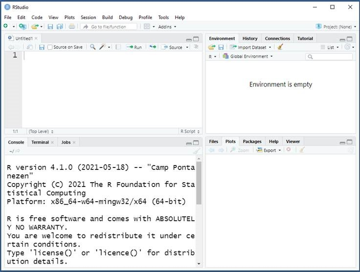

Beginner guide to R
by: Sara Baart, Department of Biostatistics, Erasmus MC
R is an open source statistical software package used often in data analysis. It is a little more complex to use than SPSS, because it is mainly syntax (code) based. However, R is more flexible and powerful than SPSS. So, it is definitely worth the effort to get the hang of.
In this web page, I will explain the basic steps to get you started with R. I will also make a document with some more advanced methods.
Good luck!
Sara Baart - 29-12-2021 s.baart@erasmusmc.nl
Installing the software
R
R is free to install and can be downloaded here: https://www.r-project.org/. Click on download R and choose a CRAN mirror (Netherlands for example, but this doesn’t really matter) and install R for your operating system.
RStudio
You also need to install Rstudio. R and Rstudio are connected with each other; R does the calculations in the background and we work with Rstudio, which is more user friendly. You can download RStudio here: https://www.rstudio.com/products/rstudio/download/ (choose the free desktop version).
When you have installed it, Rstudio should look something like this:

The Rstudio screen consists of four panes:

Explanation:
This is your code editor or script. Here you type your code; you can save this file as an .R document.
The environment. All your R objects are displayed here (datasets, models, vectors, functions, etc.)
The console, where you find the results of your analyses.
Plots are displayed here. The tabs packages and help provide information about packages and functions.
Now you are ready to start with R: